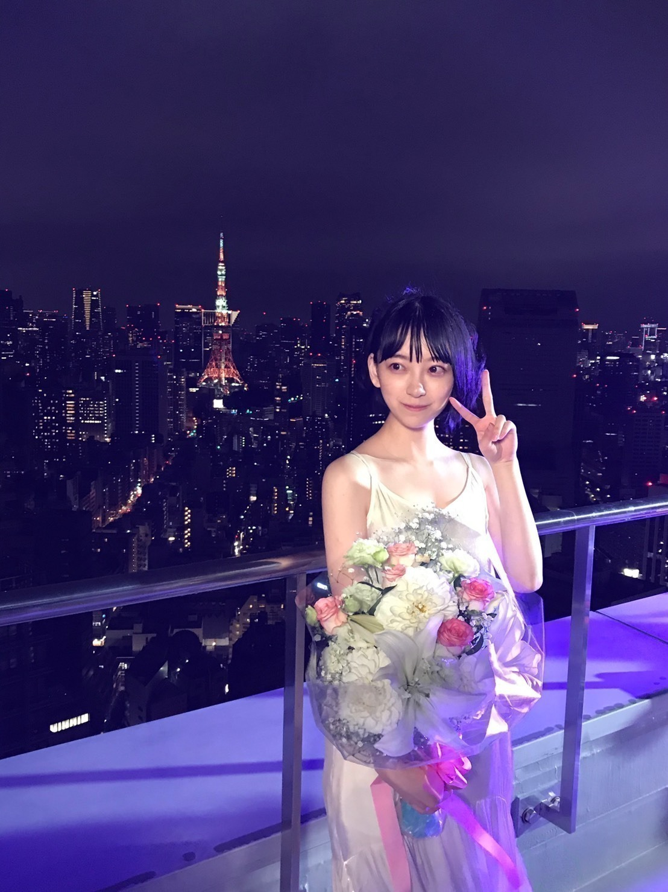
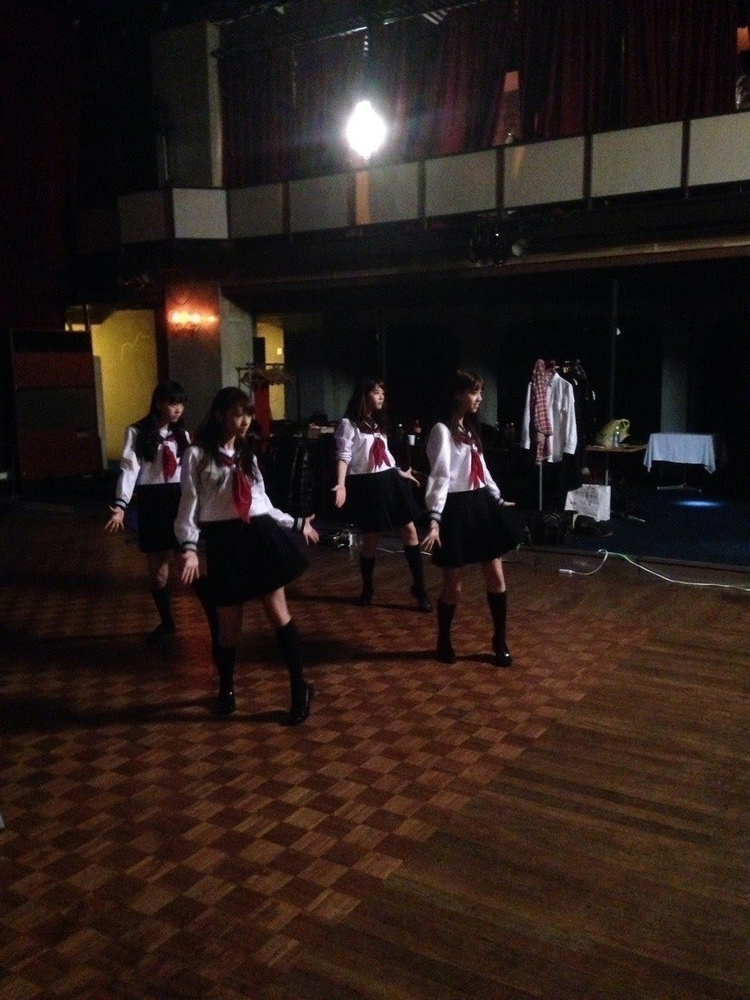
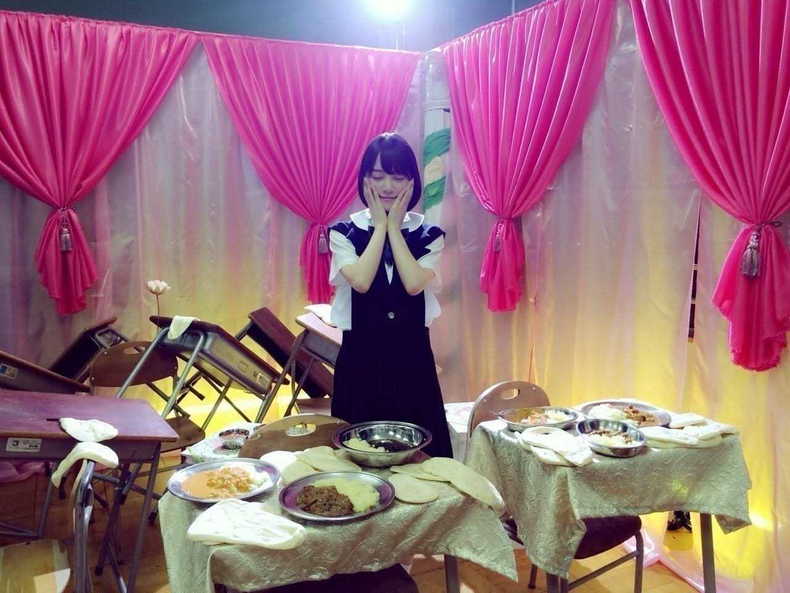
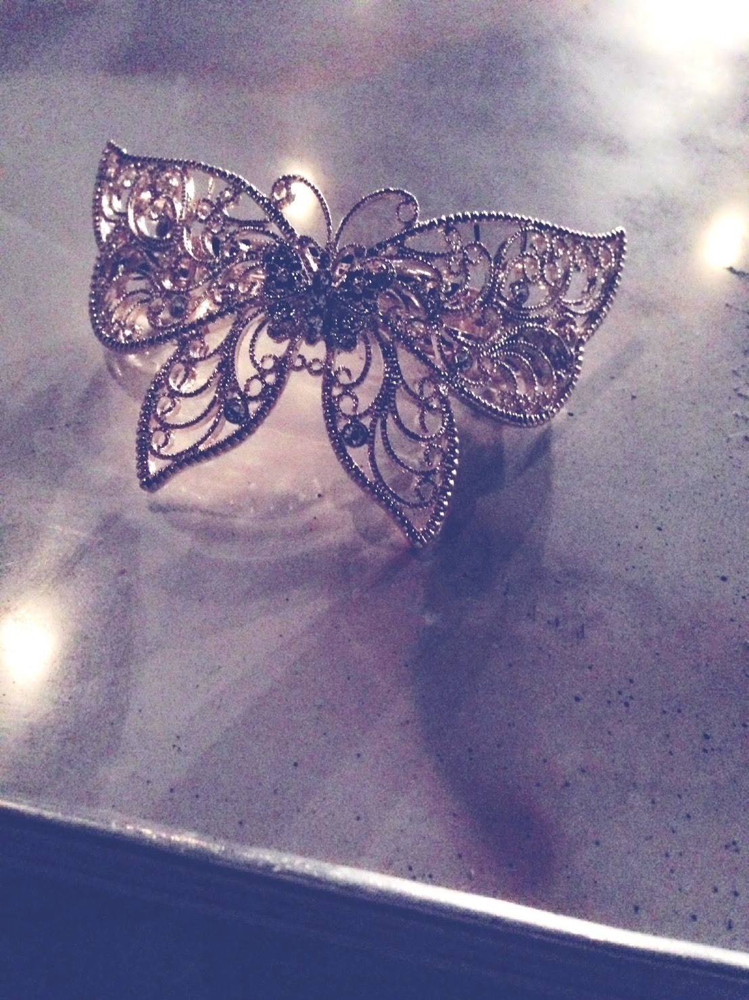

2020/1127Fri応援してくださるみなさんへ
先日発表されました26枚目シングル
"僕は僕を好きになる" の
活動をもって、乃木坂46を卒業します
卒業については前々から考えていて、
スタッフさんとも何度も話を重ね、
時期が決まったのは夏頃でした
そしてメンバーには今回の選抜発表前に、
みなさんにはこのタイミングで
お伝えさせていただきました
今日、11月27日は私にとって特別な日
今から7年前の2013年11月27日は
初めてセンターを務めさせていただいた
初めての選抜参加楽曲"バレッタ"の発売日です
加入して半年、右も左もわからない
研究生だった私が突然センターを任され
何度もプレッシャーに押し潰されそうになったし
逃げたくなったし辛かったけど
ファンの皆さんが励まして応援してくださり、
メンバーが支えてくれて16.17歳ながらに
たくさんのことを学べた時期です
正直、2013年〜2021年の
このアイドル人生は
楽しかった事ばかりではないし
現実の厳しさをたくさん目の当たりにしました
ありのままの自分で立っているからこそ
自分自身の身が削られていく感覚も
たくさんあったしいろんな葛藤が毎日ありました
でも、歌やダンスが好きになって
ライブも苦手意識が初めはあったけど大好きになって
人見知りやネガティブ思考もなおり、
自分を表現することやお芝居の楽しさも知って
自分や周りを守る強さが必要なこと、
支えてくれる人を大切にしないといけないこと、
諦めないこと、貫き通すこと、
なんでも楽しむこと、乗り越えられない壁はないこと
たくさんの感情、景色、人、自分に
出会う事ができました
私の青春は間違いなく乃木坂46だったし
乃木坂46に入ることができて本当によかったです
すごくラッキーガールだなと思います
卒業後は、1からお芝居をしていきたいと思います
この夢に出会えたのもいろんなMV撮影で
いろんな監督さんに出会って映画やドラマも
経験させていただいて、今の私が1番やりがいを持って
ぶつかれる事だなと確信したからです。
言い回しも、表情も、何もかもまだ勉強途中で
苦手意識さえもまだあるけれど、
追求していきたいし乗り越えたいって思えます
たくさんの人に何かを届けられる人になりたいです
それは乃木坂46にいた時と変わらない気持ち．
乃木坂46で学んだこと、素敵な思い出を胸に、
来年からは新たな一歩を踏み出したいと思います
わたしには3つ
心残りがありました。
1つめは歌に苦手意識がまだあって、
そんな歌を楽しく歌って終わりたかったということ
2つめは大好きなダンスを
もっともっとしたかったということ
3つめは応援してくださるファンの皆さんに
なにか恩返しをしたかったということ
2度目のセンター待ってるね、ソロ曲聴きたいよ、
などと期待してくださった方に
私は在籍中なにか恩返しできたのかなって
でもね、最後に夢が叶いました．
初主演映画でご一緒させていただいた
山戸結希監督が最初で最後のソロ曲MVを
撮ってくださいました
わたしの気持ちを全てを、山戸監督が
汲み取り、繋ぎ合わせてくださった数分間です
YouTubeにも先程UPされましたが、、
よかったら、見てください
今までありがとうございました!
最後まで私らしく楽しみます!
乃木坂46が、応援してくださる皆さんが、
本当に大好きです☺︎




2020.11.27 乃木坂46 2期生
堀未央奈
コメント(4601)
紅白とCDTV見たよ。
アイドル堀未央奈の集大成、最高でした。
しっかり目に焼き付けたよ。
ハーフツインは見納めなのかな？笑
明けましておめでとう！
今年もよろしくね。
さてさて、無事ＣＤＴＶ「僕は僕を好きになる」見ました！
聴きました！ これまた未央奈かわいい・・・
今回はアレンジし直して正統系ストレートツインテール
にしたんですね。 これもまた良きです。
甲乙つけがたいけど紅白のねじりハーフツインの方が
好みかな（笑笑）
ねじりハーフツインの方がお嬢様感があって落ち着いた
感じがある様に思う・・・あくまで個人的見解です・・
ＣＤＴＶでのツインテールは幼い雰囲気を強く感じる・・・（笑）
・・・カワイイはカワイイんだよ。（笑笑）
これも個人的見解なんでお気を悪くされませんように・・・（笑）
「僕は・・・」を見ていてですね、やっぱセンターポジション
の未央奈が見たかったって心の底から思いました・・・
凄く目立ってました、輝いてました、センターの未央奈
を想像して、やっぱちょっと勿体無いかなって思っちゃいました。（笑）
それは横に置いておいて・・
今年一年もよろしく？？（笑）お願いします。
別の形でブログでもインスタでも良いから、未央奈の
事発信して下さいね。 待ってます。楽しみしてます。
それではお仕事お疲れ様でした。
本日元日はいかがお過ごしでしょうか。
良いお正月になるとイイね。 楽しんで。
初夢は何でしょうかねぇ～・・・ おやすみおなぁ～
２日の朝の事だからね・・今日じゃないよ（笑）
あらためて、おやすみおなぁ～
レコード大賞見ました。堀さんが女神のように輝いていて、「世界中の隣人よ」は曲を聞いていない人の幸せにまで繋がってるんだなって思って感動しました。
紅白は迷いのない堂々とした顔をしていて綺麗でした。紅組に合わせた真赤な衣裳もとても似合ってましたね。あとエンディングでめちゃくちゃ良い位置でめちゃくちゃツインテールだったのが可愛すぎて最高でした。
ＣＤＴＶはそのツインテールが曲の若々しい感じに合ってて、幼い雰囲気も少し感じました。
忙しい年末を無事に駆け抜けてくれて本当にありがとうございます。堀さんの輝く姿を沢山見れて元気出ました。忙しかった分ゆっくり身体休めてくださいね。
インスタグラムで言ってたように、たくさんの挑戦とたくさんの笑いに満ちた年にしてくださいね。今年もよろしくおねがいします。堀さんが今よりもっとたくさん愛される年になるように祈ってます。
明けましておめでとう
ラスト紅白どうでしたか？
246のパフォはもちろんめっちゃ素敵だったけど、最後の結果発表と蛍の光の時にセンターにいたことが眼に焼きついているよ
スゴくうれしかったな
2021年がほりっぴ～にとって笑顔溢れる、新たな飛躍の年になることを祈ってます
推し変わらずだよ
昨年もありがとうございました！
乃木坂46に未央奈に救われた一年でした！
そして、紅白観ました！
未央奈の有志をしっかりと目に焼き付けましたよ♪
赤色の紅白衣装も素敵でした！
未央奈はショートパンツタイプで、やっぱりお似合いだし、いいですね♪
パフォーマンスは一言で言うと圧巻でした！！
全員でのパフォーマンスも嬉しかったし、かっこ良かった！！
最後までいてくれて嬉しかったし、未央奈髪型変えてツインテールしてたね！
本当に可愛すぎて、嬉しくて少し泣きました…！
未央奈のツインテール大好きなの…❤️
そして可愛すぎだよ～！！
ばっちり映っていて、嬉しかったよ☺️
またゆっくり年明けからＣＤＴＶについてはコメントするね！
ばっちり全部観てました！！
未央奈大好き❤️
いよいよ卒業のメモリアルイヤーの2021年が明けましたね。
持ち前の美貌と積極的な行動力を、活かして乃木坂４６での残りの時間を駆け抜けて下さい。
卒業しても、今まで以上に応援していきます。
2021年が、未央奈さんの更なる飛躍の１年になりますように心よりお祈り致しております！
・あけましておめでとう！旧年中は大変お世話になりました(^^)今年は卒業という節目を迎えますが、お体には気をつけて、仕事やプライベートに勤しんで下さい！
・"大逆転裁判2"をクリアしたよ！伏線は全部回収したみたいだけど、話しの流れ的に続編を匂わせる感じ(主人公の物語りは完結したから、主役が交代しそうだけど)で終わったから、3が発売されるならプレイしたいかな！
今後は"FF6"、"逆転裁判5"を並行してプレイしていくつもり(^^)
・がんばみおなー
2021年明けましておめでとう！
乃木坂にとって結成10周年の
アニバーサリーイヤーの年が始まりましたね。
未央奈ちゃんにとって乃木坂として活動する
最後の年がついに！
卒業しても頑張って
昨年は本当にお疲れさまでした
私もいつもと違う日常に戸惑いを覚え
また、コロナで父を亡くすという悲しい出来事もあった年でした
いくら気をつけても気をつけ過ぎってことは
ないので本当に充分に予防してくださいね
新年早々暗い話をして申し訳ありません
さて、今年は希望に満ち溢れた
素晴らしい年になることを願っています
乃木坂、そして未央奈の更なる
飛躍を祈願致します
今日から正月休みでしょうか？
多分、相当にお疲れだと思いますので
ゆっくりと静養されてくださいね
あっ、お餅の食べ過ぎには注意するのだよ
それでは今年もよろしくお願い致します
明けましておめでとうございます！！
年明け１発目のお仕事は、ＣＤＴＶでしたね！
毎年恒例となっている年越しから年明けのＣＤＴＶも今年で未央奈は最後ですね。
寂しいけれど、しっかり見届けました！
ツインテールで出てくれて嬉しかったよ♪
元気の出る素敵なパフォーマンスをありがとう☺️
未央奈を年明けすぐに観れて幸せでした。
卒業されるその日まで、乃木坂46としての堀未央奈さんを、そして卒業された後は堀未央奈さんを今年も応援させて頂きます！
今年もよろしくね！☀️
僕は僕を好きになるのジャケット写真も観たよ！
未央奈はtypeCだね！美しいジャケットでした！
ますます楽しみです♪
今年の干支の丑さんの生写真も買いました！
未央奈出ますように！！
未央奈も少しゆっくり出来るかな？
お身体大事にして下さいね。
ツインテールでの笑顔最高でしたよ。
、、今年も、、良い年になりますように、、
新年あけましておめでとうございます。今年もよろしくお願いします。
紅白歌合戦、僕は見たよ。録画しながら見ました。
Route246のパフォーマンス、めっちゃかっこよかったです。サイコーでした。
みおなちゃん、新衣装似合っていて、めっちゃ綺麗で、めっちゃかわいかったです。
CDTVライブ！ライブ！年越しスペシャル2020→2021も僕は見たよ。こちらも録画しながら見ました。
僕は僕を好きになる、何回聞いても、ほんといい曲ですね。
パフォーマンスもいつ見ても、とてもすてきです。
みおなちゃん、ツインテール似合っていて、めっちゃかわいかったです。
みおなちゃん、ゆっくり休んでね。
またコメントするね。
今日はすっきり晴れてたね！
2021年最初のモバメありがとうー
今年こそたくさん笑い合える年になると良いよね
未央奈ちゃんとも話せる時が来たら嬉しい！
今はメールで繋がりあえたりするけどね。
今年も頑張ろう
インスタたくさんありがとう
最新更新からの既読時間？更新２７分後！
シンクロ率高～い（笑笑）
手がブレてる写真が最新を含めて２枚あったけど、動きが
あるのって意外にイイね（笑） 誰が撮ってくれたの？（笑）
さて、お正月初日、元日
おせちに雑煮に御餅に、おとそにと堪能しましたか？
あとミカンも・・・
食べ過ぎてませんか？ お腹いっぱいで立てない程に・・（笑）
未央奈は日本酒いけましたっけ？
正月でもワイン派かな？
酔っぱらってへべれけになってたりしません？（笑笑）
自分はそこそこしか嗜まわないんで酔っ払う程には
なりません。
お酒よりも食欲！ 伊勢海老にローストビーフ、イクラ、焼豚・・・
いやはや、これはおせちではありませんね。（笑）
ちゃんとおせちも楽しみますよ。美味しいです。
家ではぶりの照り焼きが定番なんですが、メッチャ
美味しいんです。 おふくろの味って奴です。
さぁ、今夜寝て明日の朝に見た夢がイイものでしたら
今年一年幸せに暮らせるって事で、お互いどんな夢を
見るんでしょうねぇ～
インスタで報告なんか待ってます。笑笑
ではは！
ちょっと遅くなったけど、明けましておめでとう！
こちらこそ今年もよろしくね！
今日は天気良くて、昼間も寒すぎなくて良かったよねー。
やっぱり晴れっていいよね。
ホーム画面絢音ちゃんと同じなんだ！仲良しだね☆
素敵な1年になると良いね、いや未央奈の今年はきっと素敵な1年になると思うよ！(゜▽゜*)
少しでも多く未央奈の活躍見れると良いなぁ。
はーい、よろしくねヽ(・∀・)ノ☆
紅白のRouteの赤い衣装で高めねじりハーフツインめっっちゃ可愛いくて似合ってたよー！好きだー！
紅白とっても素敵でした。
CDTVも素敵でした。
とっても可愛い髪型で大好きです！
乃木坂毎月劇場も最高でした。
今年もよろしくおねがいいたします。
今年もよろしくお願いします！！
今年も力の限り、応援させていただきます！！
今年も未央奈が平和で幸せで健康な1年になることを祈ります
頑張ろ！！！
カップスターの乃木荘を、先に卒業しちゃいましたね。
やっぱり今まで当たり前に乃木荘のメンバーといろんな事をして、ファンを楽しませてくれたので、未央さんが乃木荘から居なくなると寂しいですよ。
( ´ー`)
CRYSTALより。
誕生日モバメ
ほりっぴ～から届く最後の誕生日モバメかと思うとやっぱり寂しいかな
でも元気が出る、頑張れる
本当にありがとう
誕生日が穏やかに過ぎていこうとしてます
家族と過ごせていることを幸せに思わないといけないね
今年もほりっぴ～と一緒に頑張っていきます
・2021年最初に観た洋画は"アメリカンアニマルズ"
実話の強盗事件を、本人たちが当時を回想しながら、それと並行して役者がその人物達を演じる..的感じの作品かな？
強盗当日は、計画通りにいかなくて観てるこっちもドキドキしたけどね。笑
・がんばみおなー
紅白歌合戦もCDTVも目に焼き付けました！
未央奈ちゃんのツインテールが大好きで、、
乃木中で見た時からずっと惚れてました笑
だからまた見ることが出来てすごく嬉しかったです！
たっくさんの感謝を受け取って欲しいです。
大好き( ⸝⸝⸝¯ ¯⸝⸝⸝ )♡
今年も未央奈ちゃんとっていい年でありますように
未央奈ちゃんの最後の乃木坂毎月劇場見ました。
フライドチキン味美味しそうでした
英語はいつかしゃべれるようになりたいね堀さん
フランス語とか
あけましておめでとう
未央奈ちゃんです
新年あけましておめでとうございます
昨年はお疲れさまでした
色々とありましたね
乃木坂でも新しい試みが沢山ありました
今年はどんな年にしようと思いますか？
私は野球をやっています
打者として最も後悔の残ることは
どんなことだと思いますか？
ピッチャーに打ち取られる？
いいえ
空振り三振？
いいえ
じゃあ、バットも振らずに見逃し三振？
いいえ
正解は
バッターボックスに立たなかったことです
ケガであれ、不調であれ
そこに立たなかった後悔というものが
一番大きいです
マザー･テレサは
こう言っています
神様は私たちに成功してほしいなんて思っていません。ただ、挑戦することを望んでいるだけよ
チャレンジを忘れた人は
年齢関係なく老いていくだけです
こんな時期だからこそ新しいことにチャレンジしてください
失敗して凹んでもいいじゃないですか
苦手分野、興味の無い分野にも
ぜひチャレンジして
新しい自分を見つけてください
・ " 怪盗グルーのミニオン大脱走"を観たよータイトルにあるミニオン大脱走はおよそ10分ぐらいしかなくて、ほとんどがグルーとその兄弟のドルーが活躍するお話しだったよ。笑
ミニオンズは単独映画があるから、それと分ける意味でもグルー側に時間をさけたんじゃないかと。笑
・がんばみおなー
あけましておめでとうございマスク
ウザくてごめん
年末の怒濤の乃木坂番組
全部観ました
レコード大賞でしょ
紅白歌合戦でしょ
CDTVでしょ
どれも衣装がめっちゃ可愛いの
特にレコード大賞のは
本当にプリンセスみたい
淡いパステルカラーの紫に細かい刺繍が
してあってすっごく可愛かった
紅白の衣裳もサテンのスーツっぽい
下地に赤一色でめっちゃ格好よかったな
やっぱ全員揃うと壮観だね
CDTVの衣装は僕僕はザ･乃木坂って
感じの清楚なグレーの衣装、可愛いね
I see...はチェック柄の衣装が
めっちゃキュートでした
まなったんのお家芸をせーらが
ぶっ放してたけどお尻大丈夫かな？
今年も乃木坂を全力で応援します！
お疲れさま！
よく頑張った！
そして、少しくらいの心残り、課題が
あったほうが、長い人生、モチベーション
やエネルギーにも変換できますよ！
見守っているよ〜！
頑張れ〜！
世界の片隅で女子高生が最後まで応援してます！
未央奈ちゃん
今までおつかれさまでした
未央奈ちゃんは一人の人間としてもアイドルとしてもずっとそんけいします
自分の生き方を貫いているところもとっても素敵です
いきなりセンターになったときのプレッシャーはとてつもなかったと思います
それでもめげずにがんばっている未央奈ちゃんは本当に本当に素晴らしいです。
卒業したらゆっくり自分のペースで頑張ってください。
りの
中国のファンの一人として、卒業のニュースは本当に惊きと悲しいです。
初めて乃木坂さんが好きになったのは、未央奈ちゃんがセンターを務めた「バレッタ」から数えて7年。
この七年間、私は、未央奈ちゃんと一緒に成長し、一緒にぼんやりとした少年から、整った大人になりました。七年間でいろんなことが変わるけど、いつまでもあるのは、乃木坂46と未央奈ちゃんの好きなこと。
だから未央奈ちゃんの卒業のニュースを聞いて、私は私の青春が終わったことを知った。
未央奈ちゃんがアイドルを一生続けることができないのと同じように、私も熱狂的なファンを一生続けることができない。時間はたくさんのものを拭いますが、年を取ったら、未央奈ちゃんの7年間、アイドルとしての7年間が涙と笑いをもたらしてくれたことが、きっと人生最大の幸せだと信じています。
麻衣さんの卒業ソロの歌詞にあるように、「もうそろそろ行かなくちゃ」も、私も、未央奈ちゃんも、それぞれ離れて、それぞれがより良い生活を送るために、それぞれが努力することになります。でも同時に、未来には困ったときに、未央奈ちゃんのことを思い出して、きっと元気をもらえると信じています。未央奈ちゃんは、きっと私が上升する最大の原動力になると信じています。
「泣いで,ごめんね」
もうずいぶん経っているのに、どうしてここまで書いて泣いてしまったんだろう
さようなら、超絶可愛い未央奈ちゃん、乃木坂46最后の日をお楽しみください。
これからも、頑張ってください!
ずっと未央奈ちゃんを応援します!
谢谢。
さぁ、第二章の幕開けだ！
とても思いのこもった素敵な曲で、お世辞とか抜きでも本当に素晴らしい曲、歌、パフォーマンスだと感じるよ。
未央奈の声スゴく好きだなぁって改めて実感。
卒業発表で自分は泣いてしまったけど、もう泣かないように頑張る！最後まで明るく見送るからね。
そして卒業後の未央奈も全力で応援するよ。未来を楽しみに日々の活動を噛み締めてね。
大好きだよ。
2019年から乃木坂46に夢中になり、未央奈さんの圧巻の美しさと可愛さに魅了され、ずっと応援をしていました。
魂のこもったダンス、パフォーマンスで魅せる変幻自在の表情と圧倒的な演技力、バラエティでの明るくてたまに自由奔放な振る舞い、他のメンバーとの微笑ましいわちゃわちゃに、いつも元気をいただき、心を癒され、嬉しい気持ちにさせていただきました。
僕は基本的に「箱推し」ですが、様々な方面で活躍しプロ意識も高い未央奈さんは、メンバーの中でもひときわ心が惹かれ、尊敬する存在でした。
どの曲のMVやパフォーマンスでも未央奈さんの姿が自然と目に留まりますし、2期生曲「アナスターシャ」は僕がもっとも大切にしているMV／楽曲の一つです。
正直、卒業してしまうのは心の底から寂しいです。卒業発表から2ヶ月経った今もまだ気持ちの整理がつきません。
でも、未央奈さんがたくさん悩み抜いた末に、信念と自信をもって下した決断を、精一杯応援します。卒業してから女優として活躍される姿を拝見するのを、心待ちにしています。
「冷たい水の中」のMVを拝見し、渦巻く感情をさらけ出しながら全身全霊をかけて舞っている未央奈さんを目にして、ますます未央奈さんが好きになりました。
乃木坂の唯一無二のエースとして、乃木坂を引っ張り、僕たちをたくさん魅了させてくださり、本当に本当にありがとうございました。
未央奈さんの未来が、どうか幸せなものでありますように。
センターで呼ばれた時の会場全体に漂った、微妙で重苦しい怒号は今でも覚えています。
あの時から付きまとっていたプレッシャーに耐え続けて、実力で人気メンへと登り詰めれて、本当に良かったと思います。
この人生経験はオンリーワンの最高なものとして、誇りに思ってください、卒業後も頑張って！
TAKE@1973
ありがとう。
卒業あと少しだけどこれからの道も応援してるよ！
あと少しの時間メンバーと思い出作ってね
未央奈ちゃんに出会えた人生幸せです。
念願の2期生ライブ、とても楽しみだけれど、やっぱり未央奈が卒業するのは淋しいよ。
人一倍過酷なアイドル人生だったと思うけど、未央奈にとって素敵な思い出になるといいな…
もちろん未央奈がこの世からいなくなるわけじゃないから(笑)これからも応援するよ！
悔いなくライブを楽しんでね！
みおなはラッキーガールではなく
みおなはラッキービューティフルガール
あースッキリした。
これからが、本気で応援するスタートだと感じた
大好きです！ 応援し続けます！


だったね。
2021年明けましておめでとうございます！
今年もよろしくね～
ついに卒業まで時間が無くなって来ちゃった
寂しいな
CDTVお疲れ！
ちゃんと見たよ